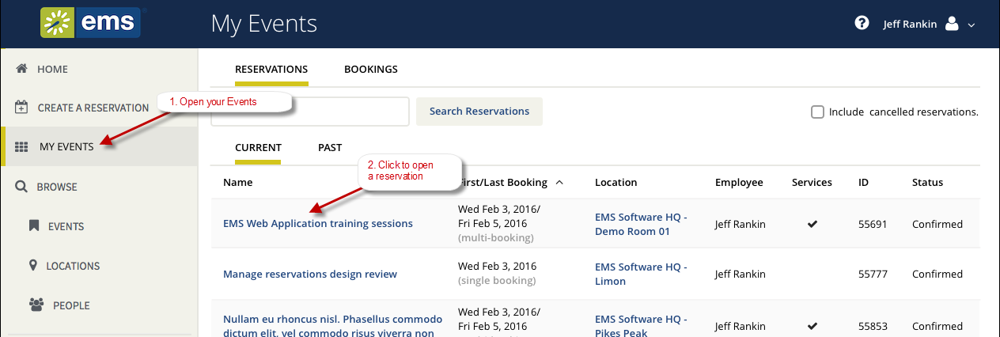
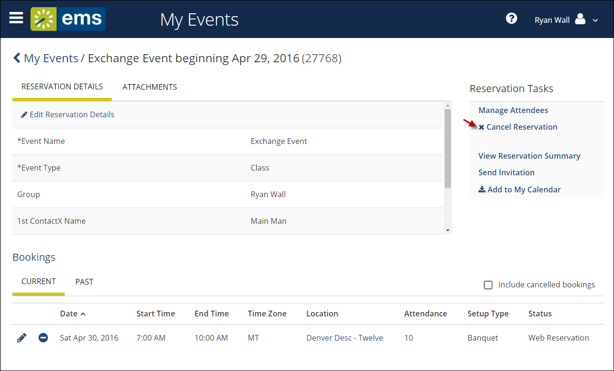
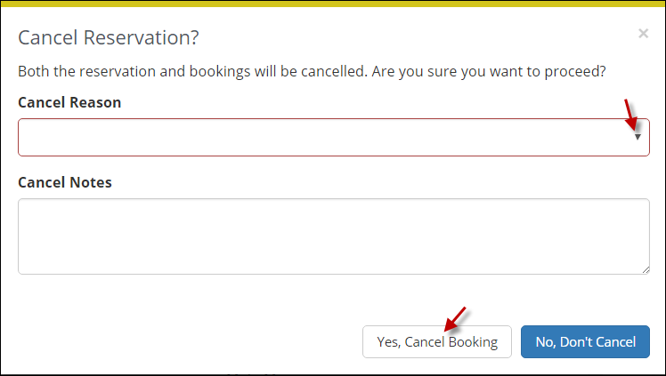
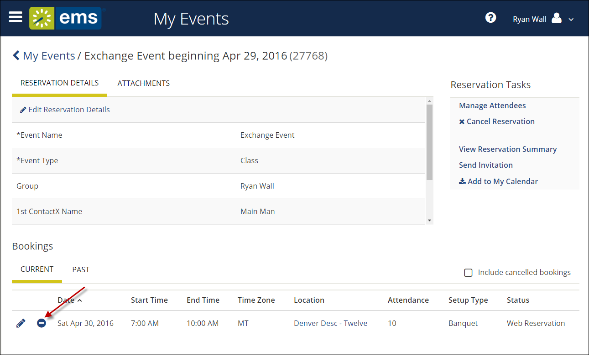
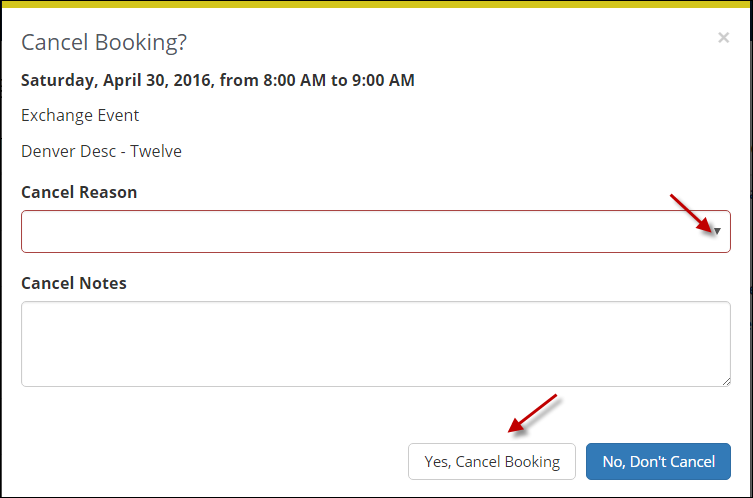

Cancel Your Reservations and Bookings
This section guides you to work with bookings in the Reservation Details page on , where you can view, add, change, or cancel services and attendees for a booking. For an overview, see Add Reservation Details. A reservation might contain multiple bookings, so the procedures below guide you in applying your changes to more than one booking within a reservation.
This topic provides information on the following:
Cancel Reservations
- Navigate to the reservation with which you want to work: click MY EVENTS on the main menu (or from the My Bookings area on MY HOME). Then click on a Reservation.

When you click to edit a Reservation or Booking, the page that opens depends upon the type of booking that you are editing—a booking for reserving a room, a booking for requesting a room, or a booking for services only.
- From the Reservation Details page, click Cancel Reservation.

Canceling a reservation will also cancel all bookings under the reservation.
- In the Cancel Reservation popup that appears, select a Cancel Reason, add Cancel Notes, and then confirm that you want to cancel.

- Your MY EVENTS pages refreshes, and the reservation is canceled.
Cancel Bookings
- From the Reservation Details page in the Bookings area, to cancel a single booking, click the date of the booking or the Remove (-) icon next to the booking. These options are available if your administrator has given you permission.

To cancel multiple bookings, click Cancel Bookings in the upper corner of your My Events list.
- In the Cancel Booking popup that appears, select a Cancel Reason, add Cancel Notes, and then confirm that you want to cancel.

- Your MY EVENTS page refreshes and the booking is canceled.